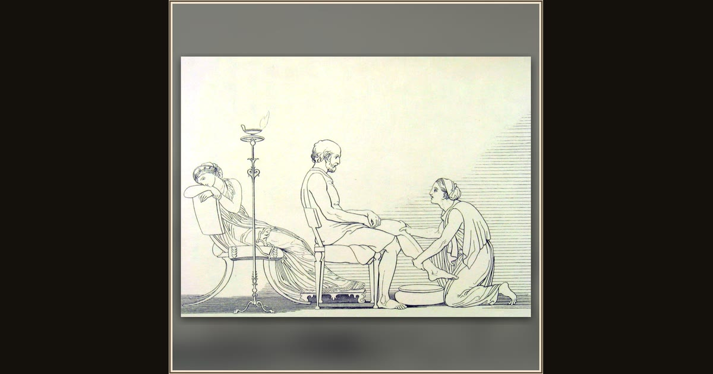

Eurycleia recognizes Odysseus
John Flaxman · 1810 · Wikimedia Commons
Look to the far left: while Eurycleia kneels to wash the beggar's feet, Penelope sits slumped and unseeing on her couch. Flaxman catches the exact turn of the scene, where Athena has drawn the queen's mind aside so she misses the recognition happening a few fe